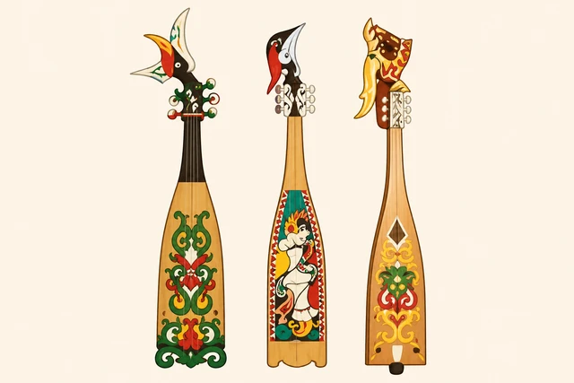

"Mengenal Kecapi"
Mengenal "Kecapi" sebagai alat musik tradisional yang menjadi bagian dari budaya masyarakat Dayak Kalimantan Tengah.

Bagian Dari Budaya Masyarakat Dayak
Kecapi dikenal sebagai alat musik petik tradisional dengan karakter suara yang lembut dan khas.
Dalam budaya masyarakat Dayak, Kecapi sering dimainkan dalam pertunjukan seni, hiburan tradisional, hingga pengiring nyanyian daerah seperti "Karungut" .
Hingga saat ini, Kecapi tetap menjadi bagian dari kekayaan budaya Kalimantan Tengah yang terus dikenal lintas generasi.
Budaya Dayak
Alat Musik Petik
Kalimantan Tengah
Perjalanan Kecapi
Mengenal bagaimana kecapi menjadi bagian dari budaya masyarakat Dayak Kalimantan Tengah.
Sejarah Tercipta
Kecapi mulai hadir dalam kehidupan masyarakat Dayak sebagai alat musik petik yang digunakan untuk hiburan, pengiring cerita, dan berbagai kegiatan adat tradisional.
Perkembangan Budaya
Seiring berkembangnya budaya dan seni daerah, kecapi mulai tampil dalam festival budaya, pertunjukan tradisional, hingga acara masyarakat.
Era Modern
Kini kecapi tetap dikenal dan mulai diperlihatkan lebih luas melalui media digital, dokumentasi budaya, serta karya kreatif generasi muda masa kini.
Hubungan Budaya & Generasi
Generasi muda memiliki peran penting dalam mengenalkan budaya daerah kepada masyarakat luas.
Mengapa harus di Lestarikan?
Edukasi Generasi Muda
Mengenalkan budaya tradisional kepada generasi muda di era digital.
Identitas Budaya
Kecapi menjadi bagian dari seni dan budaya khas Kalimantan Tengah.
Lintas Generasi
Menjaga agar budaya tradisional tetap dikenal hingga masa depan.
Galeri Budaya
Visualisasi alat musik dan budaya tradisional Kalimantan Tengah.


" Kalau Bukan Kita. Siapa Lagi ? "
- Yosia The Bassist